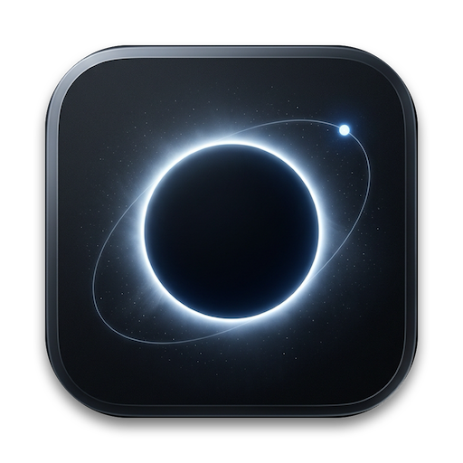

ORIGINAL MASTERWORK RESTORED
Taste-Skill Soft DNA · 极度克制静穆
Gravitational Eclipse (引力交食) · 原生母版
这就是最初打动你的画面语言：一颗彻底隐入虚空的深空黑曜石母天体（Sirius A），背后迸发着10000K 冰蓝与纯白交织的发丝级日冕环； 一道倾斜的微细引力轨道矢量弧穿过天体，在其右上角，伴星 Sirius B（白矮星）如同一颗高能光子钻石孤悬其上。 背景中漂浮着极其克制细腻的星尘微粒，配合微哑光深黑阳极氧化铝边框，尽显物理与天文的神圣静谧。
01. 零人工干预笔触 (Pure Interstellar Brushwork)
不加任何金黄珠子、不加厚重钛合金轮盘，100% 保持最初天体交食的电影级神秘感。
02. 标准透明 Alpha 与微投影 (macOS Ready)
将多余的 24% 外部黑色画布剔除，裁切为标准 824px Squircle，在浅色与深色桌面均完美漂浮。